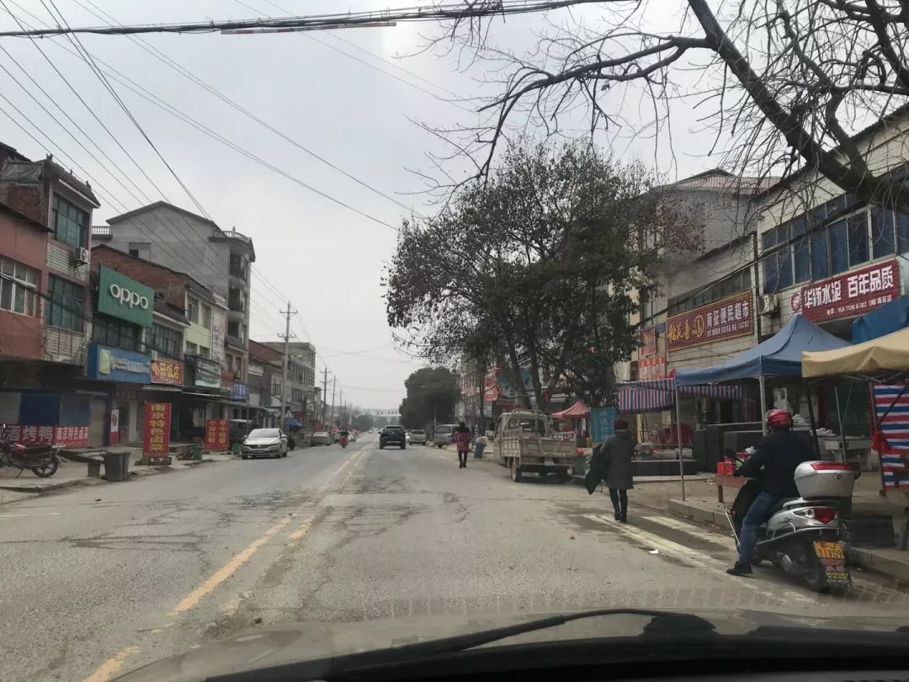
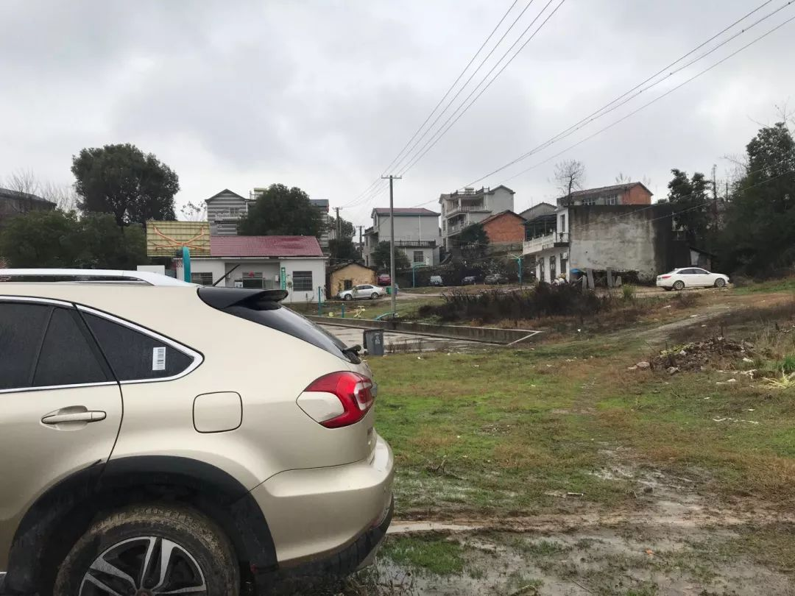
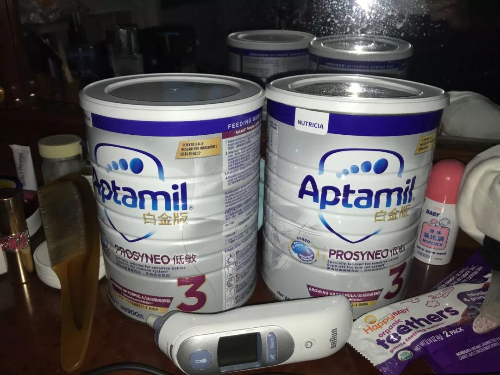

“收留”回不了家的武汉人
原文链接 备份链接 *************▲************* 四川省巴中市巴州区，一辆鄂A车牌（武汉）轿车的车窗上，贴着红岩社区加盖公章的证明，称车主无感冒发烧现象，且正在家自行隔离。 （杜茂林/图） 全文共*4201*字， …

“出不去，进不来。走不了，不敢走。”
江与湖 No.154
何处惹尘埃
黄冈：疫区副中心的春节
作者：花鳞
韩国电影《釜山行》，讲了一个逃离丧尸围城的故事，父亲用自己的生命换回女儿一条命。但据说，这部电影其实有两个结局。
一个是大多数人看过的电影结局：小女孩逃过死亡列车，穿过山洞获救；另一个是原著结局：小女孩历经千辛万苦，一露面就被军方当作丧尸无差别击毙了。
像不像全国各地人民发朋友圈，口口声声要与武汉人民在一起，然后对着路上的鄂A车或者小区来的湖北人，反手就是一个举报？
大年三十，春晚如期举行，歌舞依旧升平。临时增加的主持人诗朗诵也说，湖北人民不孤单，全国人民和你们在一起。
真好。
那么问题来了：说好在一起，你们河南人往豫鄂交界处倒满沙石是几个意思？

行，河南人民倒石头堵路就倒了，那全国人民疯狂点赞，评论区里充满着欢乐的哈哈哈哈，又是几个意思呢？更有甚者，对武汉乃至湖北人发起网络暴力和语言攻击。
要这么说的话，我这个苏北人算是身先士卒地履行宣传口号了。此刻，我正在全国肺炎肆掠第二严重的地级市——湖北黄冈。
我所在的地方，距武汉150公里，车程2个小时。在县城和它下面的乡村里，满街游走或停泊的鄂A牌小汽车，无时无刻不在宣示着其与武汉千丝万缕的联系。
这是全宇宙在武汉工作和生活人口最多的一个地级市，没有之一。
有数据显示，节前从武汉离开返乡的150万人中，有15%左右来自黄冈，算下来约有20多万。周市长说离开了500万人，那么，这个数字会更多。
这里，就是疫区的副中心。
1、回家
2020年1月18日，农历腊月二十四。
我们驱车1100公里，花了28个小时，带着不到一岁半的孩子，从深圳回到了位于湖北省黄冈市蕲春县的外婆家里过春节。
那几天，全国人民都沉浸在准备过年的喜庆祥和中。大家归乡的心情是如此迫切，以至于我们在一个预计将有30亿流动人次的春运中堵了十几个小时，人困马乏。
第二天看新闻，很多人在我们走过的路上遭遇了更严重的拥堵，甚至半夜直接在高速上熄火，在车上睡了一夜。当时心中还存在一丝“幸好早走了一天”的侥幸。但现在看来，我们就像赶在后来封城前一秒离开了武汉。
说不清是对，还是错。
好几个武汉的朋友为了错开春运高峰，让老人带着小孩提前回到武汉。然后等到公司放假，再分别乘坐高铁，飞机或者自驾回家。
大约春节放假前一个月，我们听说武汉出现了“SARS”。一开始，这是个笑谈，而且仅限于跟武汉或者湖北相关的人之间交流。很快，经过辟谣这个声音就消失了，没人再提起。非典太遥远了，而且大多数人并没有真实接触过，几乎完全无感。
临近春节，大家关注更多的还是抢票。
我们到家的第二天，武汉百步亭如期举行了一年一度的万家宴。据说四万多户家庭参加，觥筹交错，热闹非凡。
其实那几天，武汉的疫情状况已经伴随着各种流言开始在网络发酵。钟南山院士讲话的视频流传开来，之前武汉地方正府否认的人传人已经确定。
但在微信群里，武汉的朋友们依然在逛街、聚会、拿武汉以外少部分朋友的紧张情绪开玩笑。所有人都觉得：
武汉很安全，湖北很安全——跟往年没什么不一样。
2、武汉之外，湖北以内
从小年开始，黄冈市蕲春县下起连日细雨，伴随着降温，使人瑟瑟发抖，但这完全阻挡不了人们的热情。我所在的乡镇，各家的聚会，仍然在如往年一样上演。
蕲春本地的人家摆酒，开席前会放礼花鞭炮，一为庆祝，二为宣布。每日礼花爆炸声此起彼伏，白昼的天空也被照得五彩斑斓，空气中弥漫着硫磺的味道。
小镇上，遍布着热闹的小超市和肉菜水果摊位。人们挤在熙熙攘攘的年货大军中，在小镇上突然涌入的鄂A牌，粤牌、苏牌、浙牌的拥堵车流和热闹的乡音里穿梭。
几乎没人戴口罩，甚至根本没人谈肺炎。
长居本地的人们，正翘首以盼着在武汉、珠三角、长三角工作的亲人们回家，过年。
此时，一部分理解“链式传播”可怕威力的年轻人，逐渐嗅出了一丝危险的味道。大家开始搜寻和交流各地、尤其是武汉的信息。有人不治身亡的信息开始流传，各种物资尤其是口罩开始涨价、脱销。
这边有在本地卫生部门工作的的亲戚，被紧急通知取消春节假期；一个亲戚平是刑警，平时只执内勤，被安排春节加班出外勤，任务是看守住这座县城的通道和关卡。
但直到此刻，作为武汉之外最严重疫区的黄冈市，仍然没有发布任何感染信息。仅有的一些情况在本地公务员亲戚口中谈到，且口径不一，数据不一，但都指向一个结果：
有人感染是肯定的，情况是不容乐观的。
此时，大多数人年轻人刚刚到家开始修整，并没有“逃离”的动力。而乡村的老年人们依然到处串门、寒暄、聚会、打麻将。面对年轻人的劝戒，他们大多嗤之以鼻：
大惊小怪，至于吗？
毕竟，他们对官方一向是最深信不疑的群体。而武汉以及本地正府告诉他们的一直都是：可防可控。
在武汉以外，湖北之内，这种情况绝不会是孤例。
武汉作为湖北省会，集中了全省最优质的资源，又吸引了全国人民的关注、媒体的绝大部分流量、绝大多数的物资和医疗力量之源。而其他湖北城市，诸如黄冈、孝感、黄石……其实处在一种更加危险的境地。
一方面，这些湖北城市吸收了绝大部分疫情传播期间从武汉归来的人口。
仅有的少量武汉人外出到其他地区或国家，都已经造成了严重感染和传播，上百万涌入其他湖北城市的人，在14天潜伏期后将带来怎样的滔天巨浪？没人心里有底。
另一方面，其他城市的医院条件和医护人员的水平跟武汉不可同日而语。
拿黄冈来说。整个黄冈大市，人口（800万）仅次于武汉（1100万），目前全市只有一台能用于检测新冠病毒的仪器，而试剂盒更是紧缺，并且仍以武汉优先。
而我们自己更是身处偏远的乡村，周边十几公里都没有一个像样的医院，甚至都没有一家正规的药店。现在村村设卡，户户联防，哪怕有个头疼脑热，都不知该怎么办。
当全国人民热火朝天拉物资赶往武汉、感动中国的时候，黄冈、黄石、孝感、恩施……的医护人员和普通民众，却在瑟瑟发抖。
就在我们隔壁镇（蕲春县刘河镇）医院，网传12名医护人员集体感染并封院（有媒体说是4人，包括院长）。他们在网上发布了求助信息，急缺口罩、防护服和消毒设施，只能用打农药的喷雾器进行简单的消毒。
而他们，却是全村人的希望。
这些信息，淹没在朋友圈感恩逆行、搞笑段子、点赞河南、援助武汉的声音中，显得无助而卑微。
3、除夕夜，村子封了
2020年1月24日，除夕。
在武汉封城之后，黄冈连夜发布了封城信息，国务院则发布了举报隐瞒疫情的通道。我们感觉到，事态已经非常严重：一是感染的情况，二是瞒报的情况。
除夕白天，县内道路还没封锁。开车送妹妹回县城的路上，路过之前热闹非凡的镇上。往年逢过年必堵车的小镇，畅通无阻。
疫情的消息终于在乡镇一级发酵了。

镇上人流稀少，也没几家店开门 /花鳞
在沿路匆匆驶过的鄂牌小车中，偶尔还夹杂着几声救护车的鸣叫，搞得人心惶惶。
晚上，我们一边心猿意马地看着春晚，一边把准备初一过来拜年的亲戚一一劝退。而初一早上的情况则证明我们做了无用功：
路已经封到村口，想拜年也来不了了。
老爸打电话抱怨：之前就让你们赶紧走，现在走不了了吧！快找找有没有小路能出去！岳父则说：真奇怪！以前这个时候叫去打麻将的电话早响爆了，今年一个都没有。前一天送回县城婆家过年，准备初一回娘家的妹妹打来电话问，还有没有能回来的路。
很显然，都没有了。
往年热闹的麻将机，成了儿子一个人的玩具/花鳞
除此之外，在排查、跟踪和评估了全家人近期所有接触对象的状态后，原先紧张的我们心情反而略有放松。但当初最不以为意的老人家们，现在直接转入另一个极端状态：
恐慌。
各种人预估的感染人数、中药配方、防毒偏方、以及美国人趁着武汉军运会散布病毒的言论，都在家族群甚嚣尘上。
他们或许不明白：他们说美国人研发专门攻击华人基因病毒时候的心态，跟仅仅三天后，其他地区的网络喷子排山倒海咒骂武汉人、湖北人，是如出一辙的。

好几部车停回家门无法出发/花鳞
不过，在大年三十万家灯火的时候被封城，感觉就像1949年加入国名党；在正月初一又得知封锁已经下沉到乡道，原计划初三回深的我更有种49年加入国名党然后到了台湾又想起老娘还在大陆的感觉。
现在摆在我们眼前的现实问题有三：
一是不敢留。各种真真假假的消息，偶尔几声救护车呼鸣也令人紧张；人们不敢串门，不拜年，连对话也是隔老远简单喊两嗓子。
二是走不了。因为到处封路，铁路公路飞机停运，高速国道封锁。
三是不敢走。既有武汉人外出被集体咒骂，也有身边的朋友回深被其他业主非议。因为这个春节恰好身在湖北，我们不知道回去以后别人会怎么看自己，更不知道年后广东会不会因为返工人流而爆发一波。
我们在湖北农村，有自家种的蔬菜，米油还算充足，倒也不怕中长期的“战斗”。
但困难仍然是显而易见的：
回湖北前，我们原计划十天内就回去。小孩子的东西最多，塞了满满一后备箱。但最重要的两种消耗品：尿不湿和奶粉，却是用一天少一天。按照目前来看，奶粉最多撑一个月，而尿不湿可能用不到10天。

奶粉已经有一罐快见底 / 花鳞
有人说：17年前我不怕非典，因为我还是个孩子；17年后我害怕新冠，因为我自己有了孩子。深以为然。回来前，我们只担心孩子不适应冷天会不会感冒，而现在更担心被感染。
另外，虽然在出门前关闭了住所的燃气闸，拉掉了大部分开关的电，但留下了冰箱供电，因为还有些食品和调料无法带走。深圳回南天即将到来，发霉和腐败也令人担忧。
如果封城超过这个时间——按照各方预测，目前黄冈这样的城市正处在感染大爆发的前夕，我们被困在湖北的时间，很可能会超过这个时间——我们还不知道该怎么办。
还有就是，工作怎么办？
正月初一，闲来无事的我们组建了在湖北的同事群。有人在大年三十或者正月初一，趁着还没完全封路踏上了返深之路，沿途应对着各地交警拦路盘查。有人已经顺利到达，计划自我隔离；也有人出门就被劝返。
更多的人，包括我们在内，则看着自己一步步被限制在城市、区县、乡镇，最后到村。即使在村里，也没人串门，人人自危。
面对“待定”的解封时间，我们更焦躁的是工作的事情怎么安排？公司会如何处理我们这帮人？工资、放假、请假、绩效、客户需求怎么算？有些人担忧房贷车贷怎么还？
手停口停，心中又没底，这些都是实实在在的问题。光靠感动，解决不了问题。
4、暴风雨前
在深圳，每当夏季台风来时，几百上千公里外都会狂风大作、暴雨倾盆。但漩涡中心，往往却一片安宁。身处漩涡中心的湖北人并不会很慌。大多数人的感受应该是：
闲得蛋疼。
但这只是一种孤岛式的安宁，最强烈的暴风雨就在旁边，只能眼睁睁地看着它过来。
春节后疫情在各地的爆发式上升，基本难以避免。即使距离武汉千里之外的城市乡村，都已经开始设卡阻隔，提前防范。
现在想想，当初如果不是真相不明，我们可能不会回湖北；如果不是真相不明，与武汉密切联结的城市和乡村或许会更加防范。
每当灾难发生，很多人爱说谁又替谁负重前行了。但回溯源头，还真不好说，到底是谁在替谁负重前行？
美剧《切尔诺贝利》里，在灾难情况还没被彻底摸清前，几个老头子就自己在秘密地下防护室里开了个会，为了“防止大众恐慌”，而把事件定为绝密。
消防员们穿着普通消防服冲进核辐射的中心，普通民众看着奇怪的烟雾和光线。
在那些高傲的决策者心中，底层民众除了害怕什么也做不了，让他们知道真相只会让事情更乱——这种想法达到极致时，他们便会自作主张地隐藏真相——普通人甚至失去了对自己生命安全的知情权。
真相或许残酷，却是真正平等尊重每一个生命、最终解决问题的唯一路径。如果真相失去话语权，恐惧之下的谣言占据了话语权，后果可能不堪设想，甚至改变历史的走向。
对于那些习惯于用回避真相来回避问题的权力者而言，死亡本身、死亡人数、死亡方式都是扑簌迷离，甚至可以掩藏的。直到灾难大到无法在一个地方隐藏，无法被一种权力控制——比如飘到苏联以外的核辐射，或感染到省外甚至国外的病毒。
辛苦多年建立的信任，就此毁灭。
如今，在更高层接手援助的情况下，几乎没人怀疑这个国家宏观调控的手腕和能力。
开通瞒报谎报疫情的举报通道，信息实时公布，避免谣言惑众；投送医疗队和物资，发动足以改变中国人传统春节习俗的宣传，再次演练了举国动员能力；以小汤山模式快速建医院，检验基建怪兽在指尖舞蹈的能力；3天交付80万套N95口罩和上万套防护服，启动研发疫苗，检验科研和制造应急能力……
对于高层，这几乎是一次完美的演习，既检验了央地关系，检验了动员能力，又扩大了正府和国企的影响力。
未来某天，你以为战争就靠士兵拿着枪往前怼吗？真正需要动员的，其实是社会舆论和资源，快速修路造桥的基建能力，下饺子般生产舰船、飞机、坦克、枪弹的制造能力。
但对普通人，这只是一次自求多福的渡劫。
很多研究指向，在未来几天过了潜伏期的疫情，会像投入水中石子荡起水波一样，从正中心的武汉扩散到黄冈这类距离武汉最近的副中心，然后继续向远方泛起涟漪。
彼时，非武汉的其他湖北城市，才会迎来真正考验。
5、我们需要什么
其实，除了病毒，这几乎是一个最安全的时期：邻里联合，村村自卫，陌生人不得出入。人们养成了勤洗手、多运动的好习惯。好吃好喝，无所事事，怡然自得。
此役之后，武汉地区、大别山地区将新增两所强大的公立医院，吸收更多的资源和经验，长期的收获不一定会比短期的损失小。

大年初一，冷清的湖北乡村/花鳞
从物质层面来看，目前疫区副中心城市们最需要的，应该仍是医疗资源的援助。
尤其是在更多资源涌向武汉时，更多人能关注黄冈这种与武汉联系密切，医护能力却不可同日而语的城市和乡村。
反观非武汉、非湖北城市，节后返工大潮带来的病毒隐患让人捉摸不透；对于湖北籍强行返回的邻居处处设防，造成邻里猜忌；陆续的城市管控，造成囤货抢货物价飞涨……
另外，无数传染病专家、医护资源涌向武汉、湖北，本地防御力量和储备势必会有所下降。病毒会否随着人员回迁打一场“围魏救赵”的战役，对于其他城市也是一种考验。
但对于武汉人、湖北人而言，目前最让他们难受的，莫过于谩骂攻讦和网络暴力。来势汹汹，令人措手不及。
绝大多数离开武汉的人，起初并不知道疫情的严重程度。正如我们为何回到湖北一样，都是无知的受害者。
即使如此，封锁城市隔断疫情，湖北人也默默接受。其他地区村口倒沙石是防止外人进来，湖北人村口倒沙石是防止自己出去。
面对危难，其实人类大多是愿意自我牺牲的，这在过往的灾难——比如SARS或汶川地震中并不鲜见。但这种自我牺牲，跟被道德绑架的牺牲有本质区别，后者更像被屠宰献祭。
谁将湖北强行推上“_封一座城，护一国人_”的道德高位，又是谁将他们拉下神坛？喜欢做这种事情说这种话的，即使不是同一群人，也往往是同一类人。
漩涡之外，“_牺牲小我，成就大我_”式的自我感动和“_多难兴邦_”的狂欢，旋涡中心的湖北人心中却毫无波澜。所谓的“_隔离病毒却不隔离爱_”，就像让感冒的异地恋对象多喝热水一样，温暖而无用。
因为自始至终，这一切都根本不是湖北人的本意。如果你问一个武汉人对这种先捧后杀的举动有什么看法，他大概率会告诉你：
老子信了你的邪。
我本不是湖北人，但此刻身在湖北。我深知黄冈人，武汉人，孝感人，黄石人，十堰人、宜昌人、襄阳人、鄂州人、荆门人、荆州人、咸宁人、随州人、恩施人，为了配合正府控制疫情，放弃了什么，面临着什么，为此付出了多大的牺牲。
面对灾难，武汉人、湖北人并不需要事后诸葛的慰问，也不需要空洞的口号，更不需要外界妖魔化的人人喊打、高调设防。他们需要的，只是理解，以及真相。
我本不是湖北人，但此刻身在湖北。以上我所描述的一家之言、之行、之感，也是我所见到的湖北千千万万普通家庭在这个春节的日常。
我也深知，除了亲自感受，这世界并不存在真正的感同身受。而这些，永远也不用指望地域攻击的键盘侠们能够理解。
现在，我们就在这里，跟所有湖北人和所有真正关心湖北的人们一样，安静等待。等待暴风雨的降临，和暴风雨后更好的回归。
- END -
花鳞
一顿操作猛如虎，阅读数量两百五
微信扫一扫赞赏作者 赞赏
长按二维码向我转账
一顿操作猛如虎，阅读数量两百五
受苹果公司新规定影响，微信 iOS 版的赞赏功能被关闭，可通过二维码转账支持公众号。
原文链接 备份链接 *************▲************* 四川省巴中市巴州区，一辆鄂A车牌（武汉）轿车的车窗上，贴着红岩社区加盖公章的证明，称车主无感冒发烧现象，且正在家自行隔离。 （杜茂林/图） 全文共*4201*字， …
原文链接 备份链接 28.01.2020本文字数：3123，阅读时长大约6分钟 导读：湖北人也是受害者。 作者 | 第一财经 杨佼 “我有点后悔离开武汉了。自从回到乡下，武汉的新冠肺炎疫情很让人揪心，过年也变得寡然无味，大家都心神不宁 …
原文链接 备份链接 【财新网】（实习记者 黄晏浩 记者 黄蕙昭 宿慧娴 单玉晓 覃建行 黄姝伦 实习记者 王颜玉）疫情持续爬坡。1月28日国家卫生健康委新闻发布会显示，过去一天新增1771名确诊病例，这相当于新冠发病以来此前已有总 …
原文链接 备份链接 医疗防护资源不足是常态，各地资源调配需平衡，“灯下黑”区域渐次光亮，但少数地区的疫情宣传依旧不到位 外地务工返乡者最担忧的问题是年后经济收入断流、地域歧视，担心节后可能无法返工 本文首发于南方人物周刊 文 | 本刊记 …
原文链接 备份链接 1月26日晚，湖北省人民政府新闻办公室就新型冠状病毒感染的肺炎疫情防控工作召开新闻发布会，武汉市长周先旺表示，因为春节和疫情的影响，目前有500多万人离开武汉，还有900万人留在城里。 这500万人去了哪里？ 1 …